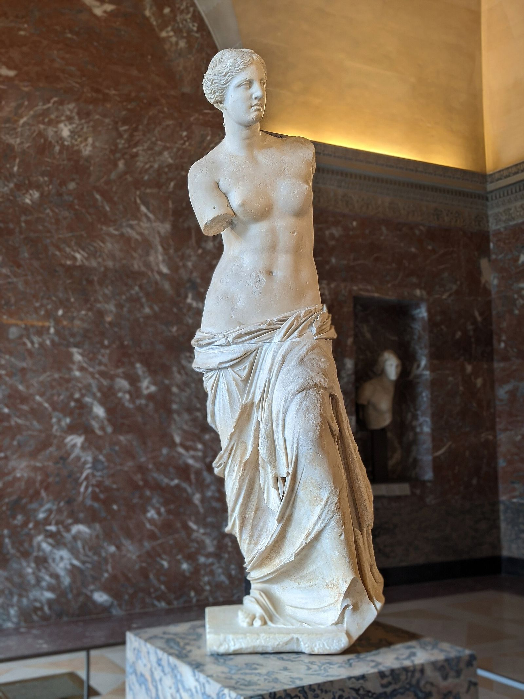

Goddess of Love, Desire and Beauty

The Aphrodite of Melos (Venus de Milo), c. 130–100 BC — Musée du Louvre, Paris
Aphrodite is the goddess of love, desire and beauty: not romance in the soft modern sense but the power of attraction itself, the force that pulls bodies, minds and even gods towards one another whether or not it is wise, safe or convenient. In one tradition she is older than the Olympians altogether, born before Zeus was even king; in another she is simply his daughter, a member of the second generation like any other. Both traditions agree on what matters: she is irresistible to gods and mortals alike, Zeus included, and the myths return again and again to the same insistence, that this power is neither trivial nor safe. It ends marriages, starts wars, humiliates the proud and levels the mighty, and no one in the Greek imagination, divine or human, gets to opt out of feeling its pull.
The MythsGreek tradition could not agree on where Aphrodite came from, and the disagreement was never quietly settled. Hesiod's Theogony tells the older and stranger version, recounted in full in The Age of the Titans: when Cronus cut off the genitals of Uranus and cast them into the sea, they drifted on the foam until a goddess formed from them, stepping ashore first at Cythera and then at Cyprus. In this telling she predates the Olympians entirely, born of the sky god's own severed flesh, older than Zeus and owing him nothing. Homer knows nothing of this. In the Iliad (Book 5), Aphrodite is straightforwardly the daughter of Zeus and the Titaness Dione, wounded in battle and running home to her mother's lap like any other child of Olympus. The two accounts cannot both be literally true, and the Greeks did not force them to be: centuries later, Plato's Symposium rationalised the contradiction rather than resolving it, proposing two Aphrodites, the elder Ourania (heavenly, born of no mother, the sea-born one) and the younger Pandemos (of all the people, Zeus's daughter, common and shared). Both births stayed in circulation; neither displaced the other.
Book 8 of the Odyssey tells it as a comic song at a Phaeacian feast, though the humiliation inside it is real. Married to the smith-god Hephaestus, Aphrodite takes Ares, god of war, as her lover. Warned by the all-seeing sun god Helios, Hephaestus forges a net of chains finer than a spider's web and rigs it invisibly over his own marriage bed, then announces a journey. The lovers seize the moment; the net drops; Hephaestus calls in the assembled gods to view the spectacle, the pair pinned naked and struggling in full view of Olympus. The goddesses, we are told, stay away out of modesty. The gods do not, and their reaction is not outrage but laughter, along with the wry observation that several of them would happily trade places with Ares even at the cost of the shame. Aphrodite herself shows no remorse: once released, she withdraws to Cyprus, where the Graces bathe and anoint her, and the affair with Ares continues. The goddess of desire is caught, shamed publicly and entirely unrepentant.
The Homeric Hymn to Aphrodite is Zeus's answer to a standing grievance: Aphrodite has spent generations making gods fall for mortals and animals, and Zeus, tired of being exempt, plants desire for a mortal man in her own heart. She is drawn to the Trojan shepherd-prince Anchises, and comes to him disguised as a mortal girl, only revealing her divinity afterwards, at which point Anchises, terrified of what sleeping with a goddess will cost him, begs for his life. She reassures him, and prophesies the son who will come of the union: Aeneas. The hymn is unusually tender for Aphrodite material, but its point is pointed all the same: the goddess who turns every god and mortal inside out with longing is, for once, humbled by her own power, turned back on herself by Zeus precisely because no one, not even she, gets to stand outside it.
Ovid's Metamorphoses (Book 10) tells the best-known Roman version: the beautiful youth Adonis is born from a myrrh tree, the transformed body of his own mother Myrrha, punished for an incestuous passion. Aphrodite, struck by his beauty, falls in love with him, and when he is killed young, gored by a wild boar during the hunt she had begged him to give up, she turns his spilled blood into the anemone flower. An older strand of the story, recorded by Apollodorus, has Persephone also fall for the boy while he is hidden away as an infant, and refuse to give him back; Zeus (or, in some versions, the Muse Calliope) rules that Adonis will spend part of the year with each goddess, an arrangement that quietly mirrors Persephone's own annual passage between the upper and lower worlds. Adonis was never part of the Olympian cult proper; Athenian women marked his death each summer with the Adonia, a rooftop festival of quick-growing, quick-dying "gardens of Adonis" planted in shallow pots, mourned and cast away within days, a ritual grief for a beauty too fast to keep.
At the wedding of Peleus and Thetis, the goddess Eris threw a golden apple marked "for the fairest" among the guests; Hera, Athena and Aphrodite each claimed it, and Zeus sent the decision to the Trojan prince Paris. Hera offered dominion, Athena offered wisdom and victory in war; Aphrodite offered the most beautiful woman alive, Helen, already married to a Greek king. Paris chose Aphrodite, and it was, on any honest reading, a bribe: she won the apple by promising something that was not hers to give. The Trojan War followed. Homer keeps Aphrodite active on the battlefield she helped cause: in the Iliad (Book 5), she rushes onto the field to save her mortal son Aeneas from the Greek hero Diomedes, and Diomedes, urged on by Athena, wounds her wrist, sending her weeping back to Olympus to be comforted by Dione, in the very scene that gives Homer's version of her birth. Even shielding her own son, the goddess of desire is shown as combat's weakest hand, and pays for her victory in the judgement for the rest of the war.
Epithets and DomainsThe elder Aphrodite of Plato's Symposium, tied to the Hesiodic birth from the severed sky-god and the higher, less bodily love. Her name (heavenly) reaches back to her origin in Uranus's own flesh.
Plato's other pole: the common Aphrodite of ordinary desire, but also, in Athenian cult, a civic goddess of concord, worshipped as a patroness of unity among the citizen body rather than mere physical appetite.
The image of her sea birth caught mid-emergence, wringing the water from her hair. The lost painting by Apelles made this the most famous single image of the goddess in antiquity, endlessly copied and described by later writers.
Her Homeric name, used almost as often as "Aphrodite" itself, marking Cyprus as the island where she first came ashore and one of her oldest and most important cult centres.
Named for the island off the southern Peloponnese where, in Hesiod's account, the sea foam first touched land before drifting on to Cyprus.
The sailors' Aphrodite, invoked for safe voyages and calm seas; a cult title attested at Knidos, home to Praxiteles's celebrated cult statue of the goddess.
An armed cult image of Aphrodite at Sparta, recorded by Pausanias (3.17.5): the goddess of desire shown bearing weapons, an unusual Spartan pairing of love with the discipline of war.
Jean Shinoda Bolen, in Goddesses in Everywoman, gives Aphrodite a category of her own: not a virgin goddess (whole in herself, like Artemis and Athena) and not a vulnerable one (defined through relationship, like Hera and Demeter), but the alchemical goddess: the power that transforms whatever it touches. Psychologically she is the eros principle itself, in the wide sense Jung used: the force of connection, attraction and generativity, as active in a painter's obsession or a scientist's infatuation with a problem as in any love affair. Her two births, which the Greeks never reconciled, are the archetype's own map. Plato read them as two Aphrodites: Ourania, born of sky and sea, desire as the ladder towards the divine; and Pandemos, "of all the people", desire as appetite in the street. Both are her, permanently, and pretending she is only one of them is how the pattern gets dangerous.
The light expression is the most immediately felt of any archetype: presence. Aphrodite consciousness confers what her myths call charis, grace: in her attention people become more articulate, braver, better looking, and the effect is real rather than flattery, because what she attends to she genuinely sees. She is creative fire in the precise sense: the capacity to fall in love (with a person, a project, a morning) and to make things bloom by loving them. And she is honest about desire in a way no other Olympian manages: caught in the net, displayed to the laughing gods, she is entirely unashamed, and the myths side with her against the shamers more than modern readers expect.
The shadow is enchantment without accountability. Her gift to Paris was real, and it started a ten-year war she never fought in: the archetype's signature damage is the consequence that lands on everyone except the enchantress. Desire as compulsion is its inward face (the Homeric Hymn shows even Aphrodite humbled by her own power, and the difference between having desire and being had by it is the whole moral of her story). The Judgement itself names the vanity: needing to be the fairest is the light of beauty curdled into rivalry with every other woman in the room. And Hippolytus marks the darkest edge: what this pattern does to those immune to it, the cold fury of charm refused. The archetype's work, in Bolen's terms, is to keep the gold and take the responsibility: to notice what happens to people after they have been shone upon, chosen, transformed, and then unchosen.
In Modern LifeAphrodite runs the attention economy. She is brand, charisma, stage presence, the influencer's golden hour and the salesman's warmth; she is also, more honourably, every artist, and every person whose attention reliably makes others come alive. In organisations she is the rainmaker whose clients feel uniquely seen, the founder who seduces capital with a story, the leader people follow for reasons their spreadsheets cannot justify, and the colleague whose approval everyone privately wants.
In coaching, the pattern presents distinctively on both sides of the table. The Aphrodite leader's shadow issues are almost liturgical in their regularity: favourites who glow for a season and are quietly replaced (the Adonis cycle, visible in every team she has ever run); seduction as a management style, which works brilliantly until the first person notices the spell is standard-issue; and drama as climate, because a psyche organised around intensity will manufacture intensity when supply runs low. The developmental line is from Pandemos towards Ourania: from needing to be the light to being able to light others and leave them lit, from charm as extraction to charm as gift. The test is what former favourites say about her three years later.
The opposite presentation matters just as much: the Aphrodite-starved client, usually a highly defended Athena or dutiful Hera, whose competence is unimpeachable and whose life has no gold in it anywhere. For these clients the archetype is not a danger but a prescription, and the work is small and concrete: beauty admitted back into the diary, attention practised as an act of generosity, the discovery that aliveness is a discipline with techniques and not a personality type they missed. Aphrodite is the only Olympian whose absence is as diagnosable as her excess.
CorrespondencesVenus. The Greeks knew the planet as the star of Aphrodite; the identification is ancient and secure, and the planet's twin appearances as morning and evening star suit her doubleness.
Friday (Latin dies Veneris). From the Hellenistic planetary week, late antiquity: astrological convention rather than classical cult practice.
The fourth, which calendar tradition gives to her alongside Hermes. Attested in later calendar commentary; treat with mild confidence.
Rose, gold, sea-foam white. Modern convention: no colour is securely attested in her ancient cult.
The mirror, the scallop shell of the Anadyomene image, the rose and myrtle wreath, and the kestos himas: the embroidered band described in Iliad 14, worked with love, desire and the whispered persuasion "that steals the wits even of the wise", which Hera borrows from her to enchant Zeus himself.
The dove, her constant cult bird; the sparrow, which draws her chariot in Sappho's first fragment; the swan and the goose, both ridden by her in vase painting; the dolphin of her sea aspect.
Myrtle, securely and everywhere hers; the rose, tied in tradition to Adonis's blood; the apple, the standing love-token of Greek courtship (and the instrument of the Judgement); the anemone, born from Adonis. Beyond these, plant lists are modern convention.
Incense above all: Sappho's fragment 2 summons her to an altar smoking with frankincense. Roses, myrtle, apples, doves. Tacitus records that her great altar at Paphos was never wet with blood: bloodless offering was her Cypriot rule. Modern practice adds honey, wine and mirrors; contemporary convention.
The Aphrodisia, held at Athens and Corinth in high summer; and the Adonia, the women's festival of the dying favourite: seeds forced in potsherds on the rooftops, sprouting fast and dying faster, mourned loudly and knowingly (Aristophanes has the rooftop cries interrupting the assembly).
Paphos on Cyprus, where the sea-born goddess first stepped ashore; Cythera; Acrocorinth above Corinth; Knidos, home of Praxiteles' famous nude; Eryx in Sicily.
Two details for practice. The kestos himas is the tradition's own statement that charm is a technology: a made object, containing named forces, lendable and returnable, and powerful enough that the queen of the gods borrows it when argument fails. Whatever a modern practitioner makes as a charm stands in that exact lineage. And the Adonia is the archetype's built-in honesty: the gardens of Adonis were planted to die, mourned on schedule, and repeated every year, desire's whole lifecycle rehearsed in a potsherd, grief included. A practice that honours Aphrodite without pretending her season lasts is following her own oldest festival.
Two irreconcilable traditions. Hesiod's Theogony: born of the sea foam that gathered around the severed flesh of Uranus, older than the Olympians. Homer's Iliad: daughter of Zeus and the Titaness Dione, one of his generation like any other
Hephaestus, her husband, the smith who forged the net that caught her; Ares, her lover, god of war. The marriage and the affair persist together, a permanent triangle rather than a scandal that ends anything